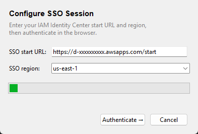
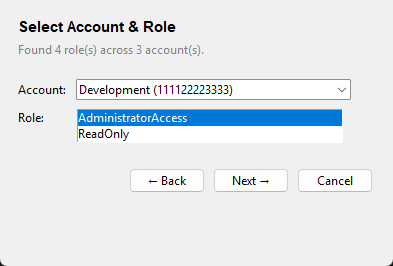
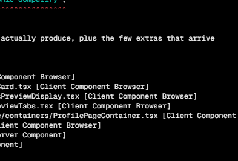
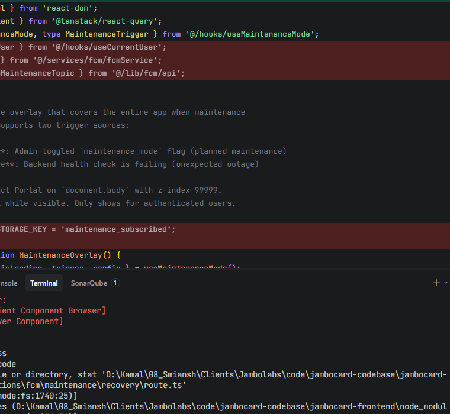
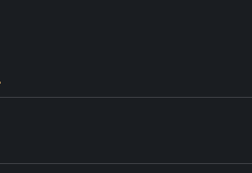
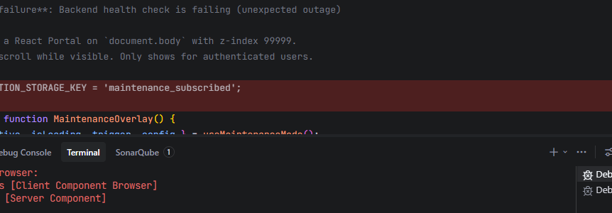
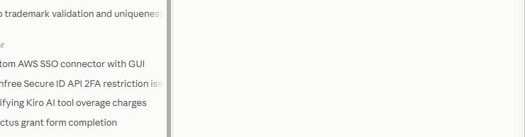
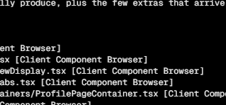

AWS Tunnel — User Guide
Manage AWS SSO profiles, connect to bastion hosts, and open secure tunnels — all in one place.
Welcome
AWS Tunnel is a cross-platform desktop app (Windows, macOS, Linux) that fills a gap the AWS console doesn't: it lets you manage your IAM Identity Center (SSO) profiles, log in, discover bastion / jump hosts, and open, monitor, and close port-forwarding tunnels to private resources — all from a single window, fully logged.
What you can do
- Create and manage AWS SSO profiles without hand-editing
~/.aws/config - Log in and out with one click (uses the AWS CLI behind the scenes)
- Auto-discover bastion hosts tagged in your AWS account
- Open SSM port-forwarding tunnels to databases and internal services — no SSH keys, no open port 22
- Save reusable tunnel profiles and reopen them with one click
- Start interactive terminal sessions on bastions via SSM
- Keep the app in the system tray so tunnels stay alive while you work
Getting Started
Prerequisites
| Requirement | Why |
|---|---|
| Python 3.10+ (or the packaged executable) | Runs the app |
AWS CLI v2 on your PATH |
Handles aws sso login and its secure token cache |
| Session Manager plugin | Required by AWS for aws ssm start-session (tunnels & terminal). Install it from the AWS documentation for your OS. |
| IAM / SSO permissions | sso:* (login), ec2:DescribeInstances, ssm:StartSession, ssm:DescribeInstanceInformation, and the Session Manager messaging actions used by port forwarding. |
ssm:StartSession on both the bastion instance and the AWS-managed
document AWS-StartPortForwardingSessionToRemoteHost. Your AWS administrator
attaches this policy — the app cannot grant it.
Run from source
This project uses uv for dependency
management, so there is no virtualenv to activate and no
requirements.txt — dependencies and dependency groups live
in pyproject.toml.
uv sync # install dependencies uv run python main.py # add --debug to also log to the console
Run the packaged executable
If you received a packaged build (aws-tunnel.exe on Windows, a
single executable on macOS/Linux), just start it — no Python needed. The AWS CLI and the
Session Manager plugin must still be installed on the machine.
First-Run Setup Wizard
When you start the app and no SSO profiles exist yet, the setup wizard
opens automatically and walks you through creating your first profile — mirroring
aws configure sso in three friendly steps. You can also open it later via
New Profile in the Profiles panel.
Step 1 — Configure the SSO session
- Enter your organization's SSO start URL
(usually
https://d-xxxxxxxxxx.awsapps.com/start). - Pick the SSO region (the region your Identity Center is deployed in).
- Click Authenticate →. Your default browser opens the AWS access portal — sign in there and approve the request.

Step 1 of 3: enter the SSO start URL and region, then authenticate.
Step 2 — Select account & role
After authentication the app queries the SSO portal and lists every account and role you
can assume. Pick the account, then the role (e.g. AdministratorAccess).

Step 2 of 3: choose the account and role from your SSO portal.
Step 3 — Profile details
Give the profile a memorable name (e.g. dev-admin) and pick the
default region for API calls. Click Create — the profile is
written to ~/.aws/config, exactly like the AWS CLI would, and the main window opens.

Step 3 of 3: name the profile and choose its default region.
AWS SSO Profiles
The AWS SSO Profiles panel at the top of the main window lists every SSO
profile found in ~/.aws/config, refreshed automatically (interval configurable
in Preferences).

The main window: Profiles, Bastion Hosts, and Active Tunnels panels.
| Column | Meaning |
|---|---|
| Profile | The profile name as stored in ~/.aws/config |
| Account | AWS account ID the role belongs to |
| Role | The SSO role assumed through this profile |
| Status | Connected (valid SSO token) or Disconnected (expired / not logged in) |
| Region | Default region used for API calls |
Buttons
| Button | Action |
|---|---|
| Refresh | Re-reads profiles and re-checks login status |
| New Profile | Opens the 3-step setup wizard (same as first run) |
| Delete Profile | Removes the selected profile from ~/.aws/config (asks for confirmation) |
| Login / Logout | Starts or ends an SSO session for the selected profile. The button label switches automatically; double-click a row toggles it too. |
aws sso login, so tokens
live in the AWS CLI's own cache (~/.aws/sso/cache). The app never stores or sees
your credentials — it only checks whether a valid token exists for the profile.
Logging in opens your browser for the AWS access portal. When a profile is connected, the Bastion Hosts and Active Tunnels panels appear below and bastion discovery starts automatically for the selected profile.
Bastion Hosts
A bastion (jump host) is a small EC2 instance that has network access to private resources. The app discovers candidates automatically whenever you:
- log in to a profile,
- select a different profile, or
- press Refresh / right-click → Refresh Bastions.
Bastion Hosts panel — rows marked with the SSM Agent status.
How discovery works
- Running EC2 instances tagged
Role=bastion(configurable) are listed. - If none match the tag, all running instances are shown as candidates as a fallback.
- Each instance is checked against SSM: SSM Agent = Online means it can be used for tunnels and terminal sessions right away.
| Column | Meaning |
|---|---|
| Name | EC2 Name tag (or instance ID if untagged) |
| Instance ID | e.g. i-0abc123def456 |
| Private IP | VPC-private address of the instance |
| State | EC2 instance state (running rows are usable) |
| SSM Agent | Online / Offline — required for SSM tunnels & terminal |
Right-click menu
- Connect Tunnel — open a saved tunnel profile through this bastion (see Opening Tunnels)
- Start Terminal — interactive SSM shell on the instance (see Terminal Sessions)
- Refresh Bastions — re-run discovery
bastion_tag_key /
bastion_tag_value in ~/.aws-tunnel/settings.json — no code
changes needed.
Opening Tunnels
Tunnels use AWS SSM Session Manager port forwarding by default: your traffic goes through the bastion to a target host reachable from the bastion (a database, internal web app, …) using your existing SSO credentials — no SSH keys and no open port 22.
The easy way — saved tunnel profiles
- Log in to a profile and wait for bastions to appear.
- Right-click a bastion → Connect Tunnel.
- Pick one of your saved tunnel profiles → Connect.
- The tunnel appears in the Active Tunnels panel within a second or two.
Creating a new tunnel profile
Open File → Tunnel Profiles… and click New:

The tunnel profile editor — save once, reopen with one click.
| Field | What to enter |
|---|---|
| Name | A short label, e.g. dev-postgres |
| AWS profile | The SSO profile to authenticate with |
| Bastion instance ID | The jump host to tunnel through (dropdown of discovered bastions) |
| Target host | Hostname reachable from the bastion, e.g. an RDS endpoint |
| Target port | Remote service port (e.g. 5432 for PostgreSQL, 3306 for MySQL, 443 for HTTPS) |
| Local port | Free port on your machine, e.g. 15432 — you connect your client here |
| Description | Optional note |
With the example above, pointing your database client at
localhost:15432 reaches db.internal.local:5432 through the bastion.
The profile is saved automatically so next time it's one right-click away. If a tunnel
drops unexpectedly (e.g. network blip) the app reconnects it automatically.
Saved Tunnel Profiles
File → Tunnel Profiles… opens the manager where every saved connection is listed and can be reused, edited, or removed.

Tunnel Profiles manager — New / Edit / Open Tunnel / Delete.
- New — create a profile (see field table above)
- Edit — change any field of the selected profile
- Open Tunnel — connect immediately through the saved settings
- Delete — remove the profile (connection metadata only — never credentials)
Profiles are stored in ~/.aws-tunnel/settings.json and survive app
updates. Nothing sensitive is stored: only host names, ports, and profile names.
Monitoring & Stopping Tunnels
The Active Tunnels panel at the bottom of the main window shows everything currently open, with a live uptime clock.

Active Tunnels — select a row and press Disconnect to stop it.
| Column | Meaning |
|---|---|
| Bastion | Jump host the tunnel routes through |
| Target | host:port being reached on the remote side |
| Local Port | Your machine's endpoint for the tunnel (client connects here) |
| Method | SSM (port forwarding) or SSM SESSION (interactive terminal) |
| Uptime | Time since the tunnel started |
Stopping a tunnel
- Select the tunnel row.
- Click Disconnect.
Tunnels also close cleanly when you quit the app from the tray or File menu — nothing is left running. If a tunnel dies on its own and it belongs to a saved tunnel profile, the app reconnects it automatically (unless it failed immediately due to a permission or configuration error — those are reported instead).
Terminal Sessions
Besides port forwarding you can open an interactive shell on any bastion whose SSM Agent is online:
- Select the profile and the bastion row.
- Right-click → Start Terminal.
- A Session Manager console window opens on the instance.
The session is tracked in the Active Tunnels panel (method SSM SESSION) and can
be stopped like any tunnel. This requires no SSH keys either — it uses the same SSM
channel.
Preferences
Open File → Preferences… to tune two behaviors:

Preferences — profile refresh interval and minimize-to-tray behavior.
| Setting | Effect |
|---|---|
| Refresh profile status every(minutes): | How often the Profiles panel re-checks SSO tokens: 1, 5 (default), or 10 minutes. |
| Minimize to system tray when closing | ON (default): closing the window hides it to the tray and tunnels keep running. OFF: closing the window quits the app. |
Your window position is remembered automatically and restored on the next launch.
System Tray
The app places an icon in the system tray (menu bar on macOS):
- Show — bring the window back (default action when the icon is clicked)
- Quit — exit the app; all open tunnels are closed cleanly first
With minimize to tray enabled (default), closing the window only hides it — your tunnels and token refresh keep working in the background. The Linux/Unix tray uses the GTK/AppIndicator or Xorg backend; a desktop environment with a system tray is required.
Data, Logs & Security
| Location | Contents |
|---|---|
~/.aws-tunnel/settings.json |
App settings and saved tunnel profiles (connection metadata only). If the file is ever corrupt, it is backed up to settings.json.bak and defaults are used. |
~/.aws-tunnel/logs/ |
Rolling log files — every action (login, discovery, tunnel start/stop) is recorded. Reach this folder quickly via Help → Open Logs Folder. |
~/.aws/config |
Your AWS profiles — written only when you create/delete profiles, exactly like the AWS CLI does. |
~/.aws/sso/cache |
SSO tokens — owned entirely by the AWS CLI. The app only reads expiry times to show Connected/Disconnected status. |
Troubleshooting
Where are the logs?
Help → Open Logs Folder (or ~/.aws-tunnel/logs/).
Run python main.py --debug for console output as well.
Common issues
| Symptom | Likely cause & fix |
|---|---|
| Login fails or profile shows Disconnected | The SSO token expired. Click Login and approve the browser prompt. Check that the start URL and SSO region from the wizard are correct. |
| "Discovery failed" when listing bastions | The role lacks ec2:DescribeInstances / ssm:DescribeInstanceInformation, or you're offline. Check the log for the exact AWS error. |
| Tunnel fails to start with an access error | The role must allow ssm:StartSession on the bastion and on the document AWS-StartPortForwardingSessionToRemoteHost. Ask your AWS administrator to attach the scoped policy. |
| "SSM Agent is not reporting online" | The bastion's SSM agent isn't running or can't reach the SSM service. Start it on the instance or pick another bastion. |
| Session Manager plugin errors | The session-manager-plugin isn't installed. Install it from AWS's documentation for your OS, then retry. |
| Tunnel died mid-work | If the underlying session expired, the app reconnects automatically. Permanent errors (permissions, unknown host) are surfaced as a dialog instead — fix the cause and reconnect manually. |
| Settings seem reset | The settings file was unreadable; check settings.json.bak next to it for the previous contents. |
| No tray icon on Linux | A desktop environment with a tray/AppIndicator is required. On Debian/Ubuntu install python3-tk and AppIndicator/GI libraries (e.g. gir1.2-ayatanaappindicator3-0.1). |
FAQ
Is my traffic or my credentials visible to this app?
No. Tunnels are plain aws ssm start-session processes driven by the AWS CLI —
encryption and authentication are handled by AWS. The app stores no secrets; it only reads
token expiry times to show status.
Why SSM instead of SSH?
SSM port forwarding needs no SSH keys, no inbound port 22, and uses your existing SSO identity — it is auditable through AWS Session Manager. A classic SSH tunnel module exists in the codebase as a fallback, but it is not wired into the GUI yet.
Can I use the same tunnel from several tools at once?
Yes — any number of clients can connect to the same local port while the tunnel is open. Open additional tunnels on different local ports in parallel.
What platforms are supported?
Windows, macOS, and Linux desktops. Binaries are built per platform with PyInstaller (the build must run on the target OS). The AWS CLI and Session Manager plugin install separately per OS.
How do I move my setup to another machine?
Copy ~/.aws-tunnel/settings.json (tunnel profiles and preferences).
Your AWS profiles and SSO tokens live with the AWS CLI in ~/.aws/ and are
re-established by logging in on the new machine.